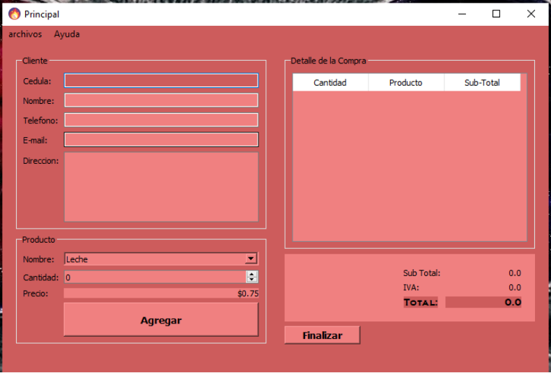
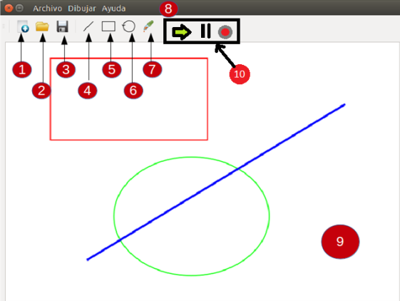

Con todo lo aprendido en QT(Herramientas de interfaz gráfica).Construir una
aplicación Que sirva para gestionar los productos de una tienda y que a su vez sirva como
programa de facturación

2.-Aplicación de dibujo
Descripción:
Crear un utilitario que permita dibujar figuras geométricas básicas (circunferencias, rectas y
rectángulos). El nombre para este utilitario es Paint++. Y difiere de otros utilitarios en el
hecho de que las figuras dibujadas pueden almacenarse dentro de una base de datos, para recuperarse
posteriormente y volverse a dibujar

3.-Aplicación para Cine
Descripción:
Desarrollar una aplicación tipo “Wizard” (Asistente) done tengamos la opción de poder escoger entre dos salas,
salas de cine donde se presentan dos tipos de eventos: películas y conferencias. También se requiere incorporar
un menú para que los clientes puedan realizar las compras de boletos sin necesidad de pasar por una boletería.
Para ello requieren de una aplicación de escritorio con interfaz gráfica, minimalista e intuitiva que permita a
sus clientes manejarse sin dificultad ni asistencia de ningún empleado.